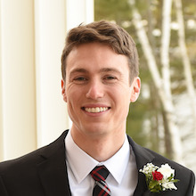

Staff
Directors
- Louise McClure
- Amy Zakar, Assistant Director
- Nancy Modell, Piano Coordinator

Clinicians
Carlough Faulkner-Carroll
Violin
Beth Guerriero Ph.D.
Violin/Viola, Orchestra
John Krumm
Enrichment: folk songs and movement

Kathy McHugh
Violin

Abigail McHugh-Grifa
Cello

Gabriel Remillard
Violin and viola
Jennifer Stomberg
Cello

Rebekah Waggoner
Piano
Accompanists
- Ikumi Hiraiwa
- Megan Hofreiter